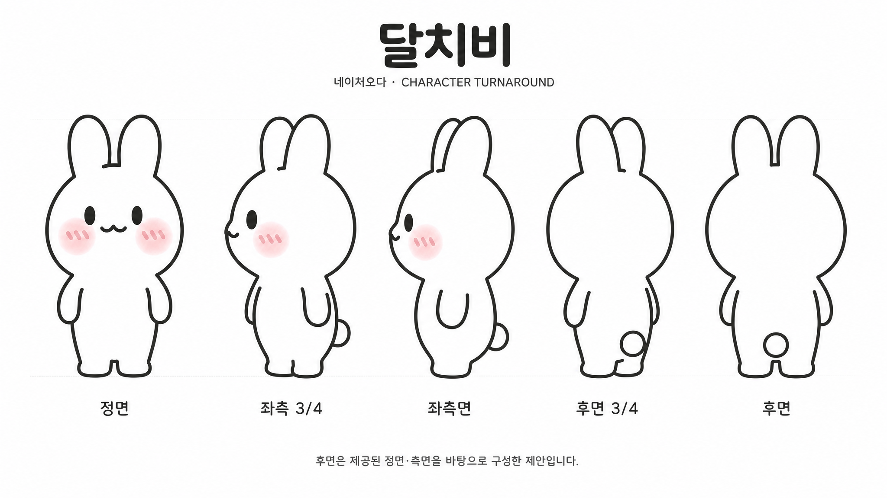

달칩샌드 일본 시장 진출 프로젝트
(주)네이처오다 · KITA 글로벌마케팅마스터 기업 매칭 프로젝트 · 팀 '막내온탑' 4인
(T1.mom AI 영상 제작 파트 100%)
※ 정규 고용이 아닌 KITA 과정 연계 기업 매칭 프로젝트 참여이며, 수행 범위는 기획·광고·홍보·데이터 분석입니다. (실제 수출·납품·판매는 수행하지 않음 / 스카이락 입점·수출 개시 등은 기업의 기존 실적입니다)
AI 광고 영상 제작 · 메타 광고 집행 · 프로모션 기획 · 링크드인 B2B 콘텐츠 운영 · 일본어 랜딩페이지 제작 참여
'달칩샌드'는 기름에 튀기지 않고 구워 만드는 국내산 유기농 쌀과자입니다. 일본으로 판로를 넓히는 것이 이 프로젝트의 목적이었고, 저는 광고 영상 기획·제작과 메타 광고 집행을 맡았습니다. 일본 쌀과자 시장의 77.5%가 간장맛에 몰려 있어 '맛과 건강'을 함께 내세우는 포지셔닝 공백을 발견했습니다. 일본 식품 구매 결정의 91%가 아내라는 데이터와 국내 30-40대 여성 결제 비중 63.9%를 근거로, 30-40대 아이엄마를 핵심 타겟으로 정했습니다.
같은 제품, 다른 두 갈래 접근
타겟 안에서도 반응하는 지점이 다르다고 보고, 접근이 다른 영상 두 편을 기획했습니다. 육아 감성 중심 부모에게는 마법소녀 애니메이션 톤의 2D 캐릭터 영상으로, 원재료가 보이는 제조 과정과 함께 '안심하고 먹일 수 있는 간식'이라는 정서적 메시지를 전달했습니다. 성분과 스펙을 따지는 실용주의 부모에게는 실사 코미디 톤의 영상으로, 성분표를 보며 고민하는 상황을 보여준 뒤 글루텐프리·논프라이·로우슈거 3대 키워드로 답을 제시했습니다.
AI 생성 영상 — 3편
Google Flow/Veo, Higgsfield로 제작한 세로형(9:16) 광고 영상입니다. 캐릭터편 2차 버전(3초 훅 리메이크)이 최종 채택 소재이며, 각 메타 광고로 집행해 비교했습니다.
캐릭터편 1차 버전
캐릭터편 2차 버전최종 채택
코미디편
제작 과정 — 레퍼런스부터 프롬프트까지
일본 30-40대 여성이 캐릭터 과자 구매자의 69.3%를 차지한다는 데이터에서 출발해 브랜드 캐릭터 '달치비'를 전면에 세웠습니다. 다만 캐릭터를 보여주는 것만으로는 광고가 되지 않아, 일본 시청자에게 익숙한 화법을 빌리기 위해 마법소녀 애니메이션과 일본 예능을 레퍼런스로 잡고 장면 구성을 먼저 짠 뒤 제작에 들어갔습니다. 장면별 이미지를 AI로 생성한 뒤 영상으로 변환하는 순서로 진행했고, 이미지에서 영상으로 바뀌는 순간 소재가 달라지는 구간이 있어 프롬프트를 반복해 고치며 간극을 좁혔습니다. 캐릭터편 원본과 코미디편은 Google Flow/Veo로, 3초 훅 리메이크(v2)는 Higgsfield로 제작했습니다. 브랜드 캐릭터 '달치비'와 남녀 목소리는 피쉬오디오로 직접 생성해 입혔고, 편집과 더빙까지 직접 했습니다.
#Fixed Prompt
Dalchibi is fixed and generated.
All moons are full moons.
Refer to Sailor Moon transformation.
After Dalchibi transforms, the apron must continue to be worn.
Dalchip Sand is a 1mm thin rice cracker chocolate sandwich.
Scene 1
Dalchibi resting on a giant, round full moon.
Cute pop-up windows sequentially appear towards the center of the screen with a smartphone notification sound, obstructing Dalchibi's peaceful view.
Notification pop-up content:
「ママがチョコはダメだって……」
「お月さま、ママに怒られないチョコのおやつ、ないかなぁ？」
「すっごくすっごく、チョコが食べたいの……」
「子どもの体にやさしいおやつ、ないかな？」
「手作りする時間はないし……」
「手作り感のある市販のおやつ、ないかな？」
Scene 2
Dalchibi pops out cutely from the center, between the alarm pop-ups.
Dalchibi's line: 「えっ？子どもの体にやさしいおやつ、探してるの？それなら、ボクが作ってあげるチビ！」
Scene 3
Close-up on Dalchibi's face, Dalchibi's eyes sparkle.
Dalchibi transforms into a magical rabbit.
Rotates 360 degrees like a magical girl, equipped with a cute magical girl lace apron with stardust.
Refer to Precure transformation scenes for the transformation.
Scene 4
A charming Moon Kingdom kitchen.
In the center, a magical mortar and pestle.
Dalchibi puts rice and chocolate into the mortar.
Pounds.
Scene 5
Dazzling light emanates from the mortar.
Dalchip Sand box and Dalchip Sand pop out from the mortar!
Scene 6
Dalchibi smiles happily while showing Dalchip Sand.
Also shows the Dalchip package.
캐릭터 일관성 — 턴어라운드 & 3D 모델
캐릭터가 장면마다 얼굴·비율·색감이 조금씩 달라지는 문제를 해결하기 위해, 정면·측면·후면 기준 이미지와 컬러 팔레트를 먼저 만들었습니다. 얼굴·볼터치·꼬리·귀 디테일까지 세부 기준을 정해, 이후 모든 장면 생성 시 이 시트를 기준으로 삼았습니다. 3D 모델로도 만들어 어느 각도에서 봐도 스타일이 흐트러지지 않는지 확인했습니다. (마우스로 드래그하면 회전합니다)

기준을 만들어도 싸움은 끝나지 않았습니다. 턴어라운드 시트를 기준으로 삼았지만 실제 장면을 생성할 때마다 캐릭터가 여전히 조금씩 달라졌고, 원하는 수준에 이르기까지 같은 장면을 수십 차례 다시 생성해야 했습니다.
영상 기획의 근거
네이처오다 대표님과 미팅을 통해 제품 성분과 표현 가능 범위를 확인하고, 일본인 유학생 3명을 직접 인터뷰했습니다. 일본 소비자가 어디에서 반응하고 어떤 매력을 느끼는지 확인해, 그 부분을 영상 대본에 살렸습니다.
메타 광고 집행 성과 (2주간)
- 1주차 A/B 테스트: 코미디 소재의 클릭 단가가 캐릭터 소재보다 40% 더 비쌌음 — 캐릭터편으로 무게중심 이동
- 1주차 → 2주차: 지출 +74% 대비 클릭 +87%, CTR +20%, CPC -7% — 예산 증액분 이상으로 효율 개선
- 지면별: 페이스북 피드·릴스가 가장 저렴(-24%), 인스타 릴스·스토리는 1.7~2.7배 비쌈, 스레드는 노출의 절반을 가져가지만 반응률은 평균의 1/4
- T1(30-40대 아이엄마) 세트: 링크 CTR 3.50%로 캠페인 평균의 1.4배, 링크 CPC는 평균 대비 3% 저렴
- 한계: 클릭까지만 추적 가능해 실제 구매 전환은 측정하지 못함 — CTR·CPC 중심으로만 분석